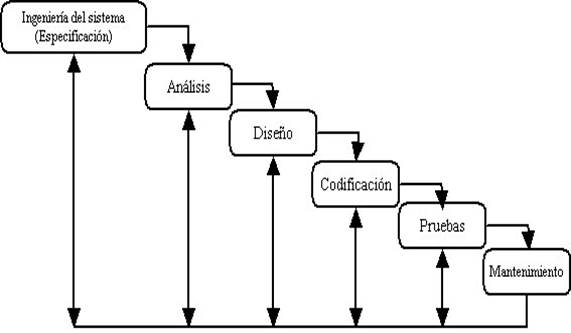
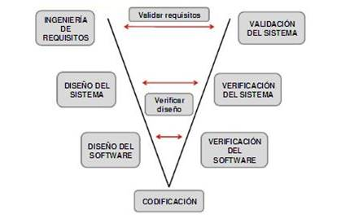
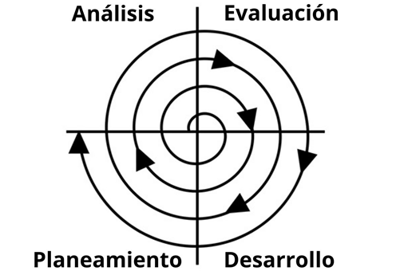
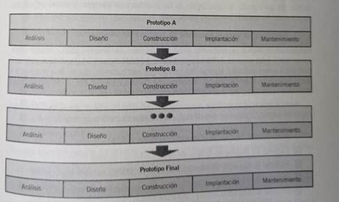

Las metodologías de desarrollo de sistemas son enfoques estructurados que proporcionan un marco para el diseño, desarrollo, implementación, y mantenimiento de sistemas de información. Estos métodos proporcionan una estructura para el proceso de desarrollo de sistemas para garantizar una implementación eficiente y efectiva.
Hay muchas metodologías de desarrollo de sistemas disponibles, y cada una tiene sus ventajas y desventajas. Algunas de las metodologías más conocidas son:
Modelo de cascada (Bennington, 1956)
Este modelo de desarrollo de sistemas es uno de los modelos más conocidos y utilizados esta metodología implica un enfoque secuencial y lineal para el desarrollo de sistemas. Su principal ventaja es que facilita el uso de iteraciones. Si se requiere hacer modificaciones, que normalmente se realizan en la fase de mantenimiento, éstas pueden realizarse a un nivel mínimo en la fase de diseño, lo cual repercutirá en la construcción mediante la codificación y a su vez se tendrán que realizar de nueva cuenta las pruebas y validaciones correspondientes para así pasar a la siguientes fases.

Modelo en V
El modelo en V es una variación del modelo en cascada que muestra cómo se interrelacionan las fases de prueba con las de ingeniería de sistema, análisis y diseño. En este sentido, se puede apreciar que la fase de codificación forma el vértice de la V, finalizando con la fase de mantenimiento.
A simple vista, parece ser sólo una variante del modelo anterior; sin embargo, existe una comunicación e interacción constante entre las fase de análisis y diseño y las fases de prueba. Esto facilita la detección de errores y permite hacer las correcciones necesarias. Es un modelo de fácil comprensión y la comunicación entre usuarios y desarrolladores se hace más estrecha, lo que no necesariamente garantiza el desarrollo de un buen sistema.

Modelo en Espiral.
Este modelo combina el enfoque secuencial del modelo en cascada con la flexibilidad del modelo ágil. El proceso de desarrollo se divide en pequeñas secciones, cada una de las cuales se completa antes de pasar a la siguiente fase.

Modelo de prototipos (Gomaa, 1984)
El modelo de prototipos es un mecanismo que facilita la identificación de requerimientos y agiliza el desarrollo del sistema. Su representación es sencilla, ya que puede presentarse en papel o en computadora describiendo la interacción hombre-máquina.
Facilita una mejor comprensión del funcionamiento del sistema por parte del usuario. Resulta difícil que un prototipo represente o simule las funcionalidades del sistema desde el inicio, por lo que esto da pie a la construcción de otros prototipos a lo largo del desarrollo del sistema. Un prototipo es un modelo que implementa una función requerida importante para la totalidad del sistema.

Metodología de Yourdon/Constantine/Myers (1975)
Metodología de Gane y Sarson (1977)
Metodología MERISE (1977, 1978)
Metodología de DeMarco (1978): estructurada y orientada a procesos
Método estructurado de análisis y diseño de sistemas (SSADM, Structured System Analysis Design Method, 1990, Versión 4)
Metodología Métrica (2000, Versión 3)
Metodología de Murdick y Ross (1994)
1. Análisis de las necesidades de información
2. Determinación de los objetivos del sistema
3. Plan y propuesta del diseño del sistema de información
4. Diseño conceptual preliminar del sistema de información
5. Diseño detallado de todos los aspectos del sistema
6. Puesta en operación del nuevo sistema de información
7. Control y mantenimiento al nuevo sistema
Metodología de desarrollo rápido de aplicaciones (RAD, Rapid Application Development).
Se enfoca en la rápida entrega de prototipos de software a los usuarios finales, permitiendo que se prueben y se utilicen en una fase temprana del ciclo de vida del desarrollo del software.
1. Modelado de gestión: se modela el flujo de información entre las funciones de
gestión
2. Modelado de datos: se refina el flujo de información como un conjunto de objetos de datos necesarios para apoyar la empresa y se definen las características de cada uno de los objetos y sus relaciones
3. Modelado del proceso: se definen las transformaciones (añadir, modificar, suprimir o recuperar) sobre los objetos del modelo de datos para lograr los flujos de información de cada función de gestión.
4. Generación de aplicaciones: codificación de una función de gestión
5. Pruebas y entrega: prueba de los componentes y entrega del programa que realiza una función de gestión
Metodologías orientadas a datos jerárquicos
La estructura de control del programa debe ser jerárquica y se debe derivar de su estructura de datos.
El proceso de diseño consiste en definir primero las estructuras de los datos de entrada y salida, mezclarlas todas en una estructura jerárquica de programa y después ordenar detalladamente la lógica procedimental para que se ajuste a esta estructura
El diseño lógico debe preceder al diseño físico y estar separado de él.
Metodologías orientadas a datos no jerárquicos (ingeniería de la información)
Planificación: construir una arquitectura de información y una estrategia que soporte los objetivos de la organización.
Análisis: comprender las áreas del negocio y determinar los requisitos del sistema Diseño: establecer el comportamiento del sistema deseado por el usuario y que sea alcanzable por la tecnología
Construcción: construir sistemas que cumplan los tres niveles anteriores
Metodologías orientadas a objetos (OMT, Object Modeling Technique)
Creada por James Rumbaugh y Michael Blaha en 1991 en los laboratorios de General Electric, emplea tres clases de modelos para describir el sistema:
Modelo de objetos: proporciona el entorno esencial en el cual se pueden situar el modelo dinámico y el modelo funcional
Modelo dinámico: define los aspectos de un sistema que tratan de la tempori- zación y secuencia de operaciones (sucesos que marcan los cambios, secuencias de sucesos, estados que definen el contexto para los sucesos) y la organización de sucesos y estados
Modelo funcional: define las transformaciones de valores de datos (funciones, correspondencias, restricciones y dependencias funcionales) que ocurren dentro del sistema
Metodologías para sistemas de tiempo real
Metodología RUP (Rational Unified Process)
El ciclo de vida del proceso de desarrollo unificado propone lo siguiente
Fase de concepción: definir y acordar el alcance del proyecto, identificar riesgos potenciales, proponer una visión general de la arquitectura de software y generar el plan de las fases e iteraciones
Cada metodología de desarrollo de sistemas tiene sus ventajas y desventajas según las necesidades del proyecto, por lo que es importante seleccionar la metodología más adecuada para el proceso de desarrollo de sistemas.